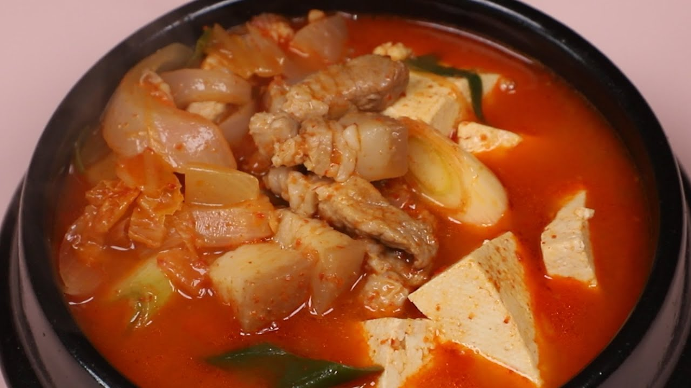
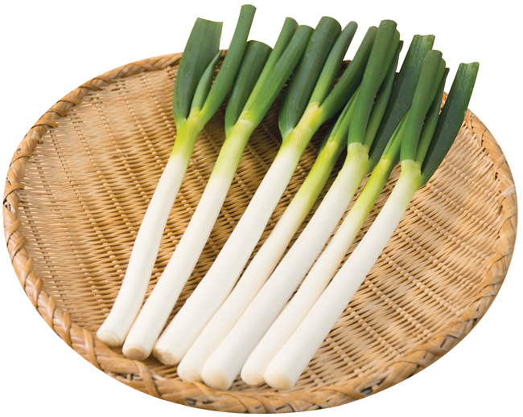
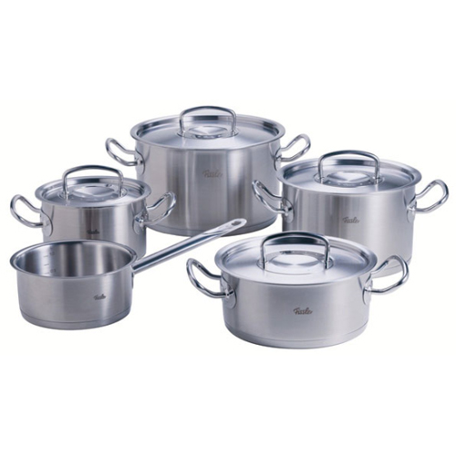
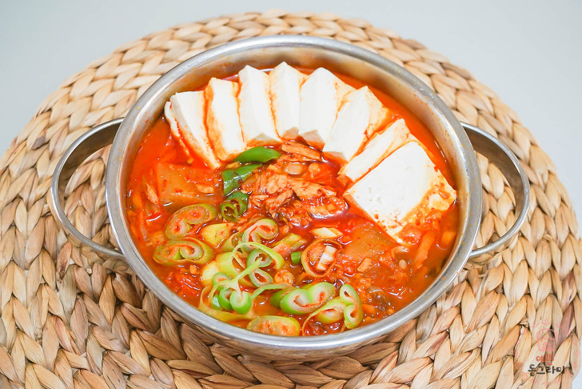

백종원식 김치찌개

주재료
- 돼지고기 120g
- 쌀뜨물 380ml (약 2컵)
- 자른 김치 150g
- 다진마늘 30g (2큰술)
- 대파 30g
- 청양고추 10g
- 홍고추 10g
- 고운 고춧가루 30g (2큰술)
- 굵은 고춧가루 30g (2큰술)
- 국간장 15ml (1큰술)
- 새우젓 15g (1큰술)
- 대파와 고추는 송송 썰어 준비합니다.
- 냄비에 목살과 쌀뜨물을 넣고 충분히 끓여, 고기 육수를 우려냅니다.
- 고기 육수가 충분히 우러나면 김치와 다진마늘을 넣습니다.
- 국물이 끓어오르면 대파와 고추를 넣습니다.
- 고춧가루를 넣고 잘 섞습니다. 굵은 고춧가루와 고운 고춧가루를 반씩 섞어 넣으면 더욱 좋습니다.
- 국간장과 새우젓을 넣고 잘 저어 줍니다.



